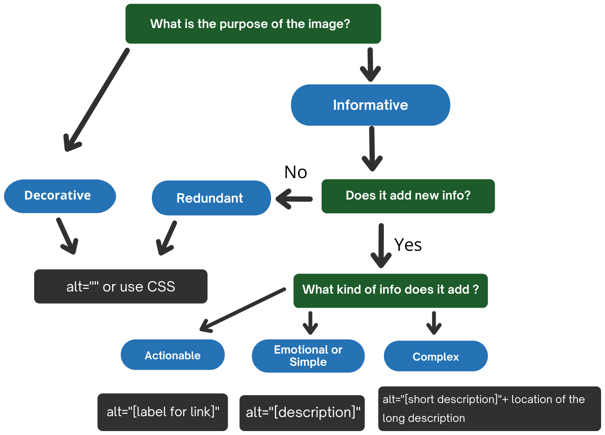

Alt text decision tree
This decision tree describes how to use the alt attribute of the <img> element in different situations. The decision tree does not cover all cases. For example, it does not cover MathML, groups of images, image maps and other alt text approaches for functional and complex images (e.g. aria-label, aria-labelledby, figcaption, etc). For detailed information on the provision of text alternatives, refer to the sections above.

Text description of the alt decision tree
- What is the purpose of the image?
- If decorative: Use
alt=""or use CSS - If informative: Go to step 2
- If decorative: Use
- Does it add new info?
- If no, the image is redundant: Use
alt=""or use CSS - If yes: Go to step 3
- If no, the image is redundant: Use
- What kind of info does it add?
- If actionable: Use
alt="[label for link]" - If emotional or simple: Use
alt="[description]" - If complex: Use
alt="[short description]"+ location of the long description
- If actionable: Use
Related WCAG resources
Related WCAG resources
Success criteria
Techniques
- H2: Combining adjacent image and text links for the same resource
- H67: Using null alt text and no title attribute on img elements for images that AT should ignore
- H36: Using alt attributes on images used as submit buttons
- H37: Using alt attributes on img elements
- G92: Providing long description for non-text content that serves the same purpose and presents the same information
- G73: Providing a long description in another location with a link to it that is immediately adjacent to the non-text content
- G74: Providing a long description in text near the non-text content, with a reference to the location of the long description in the short description